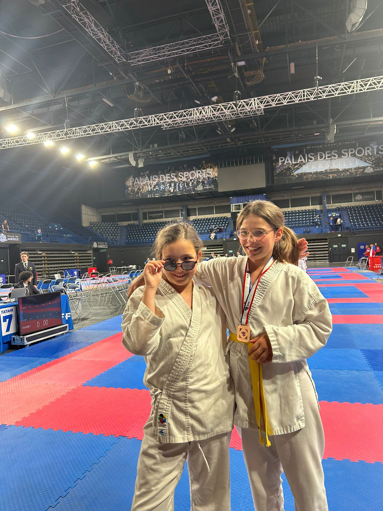
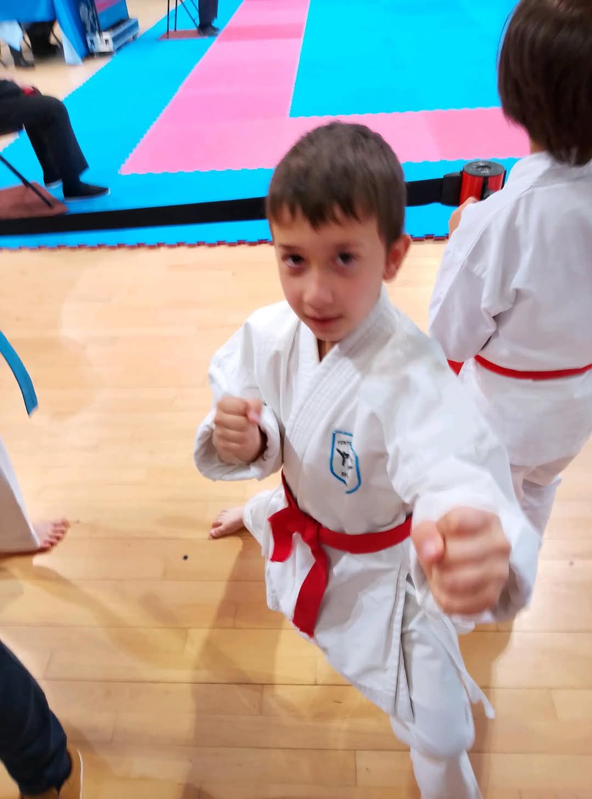

«J'ai ressenti de la joie de participer à cette compétition, qui en plus était à Marseille et avec ma copine Cléophée ! D'être sur le podium et de me dire que j'en suis arrivée là, même si je n'ai vraiment réalisé que le lendemain.J’ai gagné confiance en moi et je n’ai pas baissé les bras.
J'aime le karaté parce que ça m'épanouit. J'aime ce sport parce qu'il bouge. J'apprends à me défendre et à relâcher mes émotions. On a de la chance qu'une championne nous coache. Elle m'a donné pleins de conseils et on a passé de bons moments parce qu'elle est rigolote. Elle était à notre écoute et c'était agréable. »

Cléophée, 5e en Division 2
"J'ai passé que des bons moments. A part quand j'ai compris que j'avais perdu et que je n'aurai pas de médaille. Mais le week-end à Marseille a été génial. On a visité Marseille et j'ai pu dormir dans la même chambre que Zélie. On a bien profité, nous avons même pu se baigner le samedi et le dimanche. Le moment où on rentre dans le palais des sports par l'entrée des athlètes, et que maman n'avait pas le droit de m'accompagner. J'ai eu l'impression que j'étais comme mon papa, une professionnelle mais de karaté. Mais je ne me rendais pas compte à ce moment-là que j'étais en coupe de France encore. Et de rentrer sur les tatamis avec là musique de Jul j'ai adoré.J'ai compris ne pourrai pas gagner tout le temps. Je n'aurai pas une médaille à chaque fois.
Mais que malgré tout, j'ai passé des moments incroyables avec Marylou notre coach, Zélie m'a copine, ses parents et ma maman.Je me sent suis bien au karaté. Je me suis fais des amis. Et j'ai une super coach Jessica, qui me fait entraînement 2 fois par semaine. C'est la meilleure du karaté. Au karaté, je peux bouger, rire, parfois trop souvent, et j'apprends de nouvelles choses à chaque fois. Je peux valider des passages de ceinture dans l'année et je peux faire des compétitions. Mais ce que je préfère c'est les entraînements. On est tous ensemble. On forme une équipe. L'esprit d'équipe ! »
J'avais déjà eu Marylou en entraînement. Mais en en coach c'est la première fois. Elle est différente. Elle vie la compétition à fond comme si c'était elle qui combattait à notre place. J'espère qu'elle sera ma coach si je suis sélectionnée l'année prochaine. Elle a fait toute la visite de Marseille avec nous, comme si nous étions une famille en vacances à Marseille. »
Marylou, coach & championne
"[Témoignage à insérer]"
Gabin (kata)
"C'était impressionnant, cool et intéressant. J'y ai pris beaucoup de plaisir. J'ai été très marqué par la force des champions. Ça me motive à travailler encore plus, sans oublier l'objectif principal, s'amuser.
J'aime le karaté parce que c'est bien de savoir se défendre, qu'on apprend à se surpasser, à s'entraider, et qu'on s'amuse bien avec notre prof Jessica et avec Loïc son assistant 😊 "

Sarah, Section Haut Niveau
"À chaque fois, une leçon de vie." - Sarah
Léonard, section Haut Niveau
"J'étais très content à l'idée d'y participer car ce n'est pas tout les jours que cela arrive. j'ai appris que même si on gagne, il y aura toujours quelqu'un de plus fort que nous, rien n'est joué d'avance." - Léonard
Thibault, section Haut Niveau
"Témoignage" - Thibault
Les parents témoignent
"Fierté, stress, rires et larmes… un souvenir à vie."
Virginie, maman de Sarah
"C'est le point final d'une année intense en compétitions. Il faut beaucoup de discipline, c'est très stressant. Sarah a beaucoup évolué mais il y a toujours à apprendre."
Elise, maman de Léonard
"Ces coupes sont intéressantes car on croise des gens d ailleurs qui vont donner une nouvelle dimension aux rencontres KATA. le niveau est impressionnant. Quoiqu'il arrive je suis toujours fier de mon fils, qu'il perde ou qu'il gagne , ça lui va et moi aussi."
Mélanie maman de Thibau
"[Témoignage à insérer]"
Aude et Édouard, parents de Zélie
"Nous avons d'abord été surpris de la qualification des filles pour Marseille et nous les avons vues progresser très rapidement au cours de l'année, grâce aux entraînements de Jessica et ceux proposés par les jeunes du FKS. Plus la compétition approchait plus elles étaient investies. Nous sommes très fiers d'elles. Cette expérience nous a permis de créer des liens avec les autres parents de la Châtaigneraie et de profiter d'un super week-end à Marseille. Pour résumer, de belles rencontres et beaucoup d'émotions !"
Pauline, maman de Cléophée
"J'ai passé un super week-end. Des liens se créent. Nous, les parents, avons profité avec les filles et Marylou. Mais surtout, on a vibré, stressé, crié et pleuré. J'ai été très surprise de l'organisation. La claque en arrivant. Ma fille arrivait en Coupe de France ! Musique, timing, règles... la cour des grands. Je suis super fière de ma fille. Après 18 mois de karaté, en arriver là, elle n'arrête pas de me surprendre. Bravo à toutes les deux. Et à nous aussi."
Guillaume et Réjane, parents de Gabin
"C'était très impressionnant, le niveau de certains enfants est admirable. Gabin a beaucoup progressé depuis qu'il a commencé. Nous sommes très fiers de lui, qui est arrivé en Coupe de France lors de sa première année de compétitions ! L'ambiance est assez festive et entraînante. Nous aimons beaucoup l'esprit du karaté, qui tourne autour du respect, de l'entraide, et de la rigueur, et nous voyons que notre fils aime beaucoup ce qu'il fait."